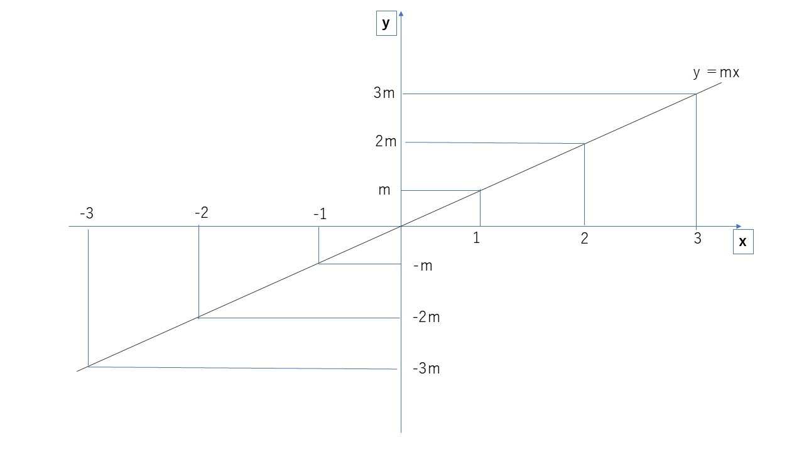
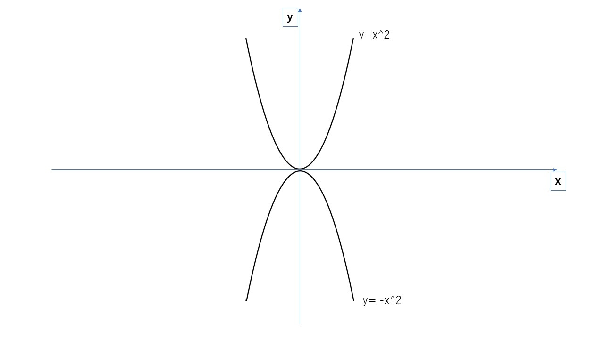
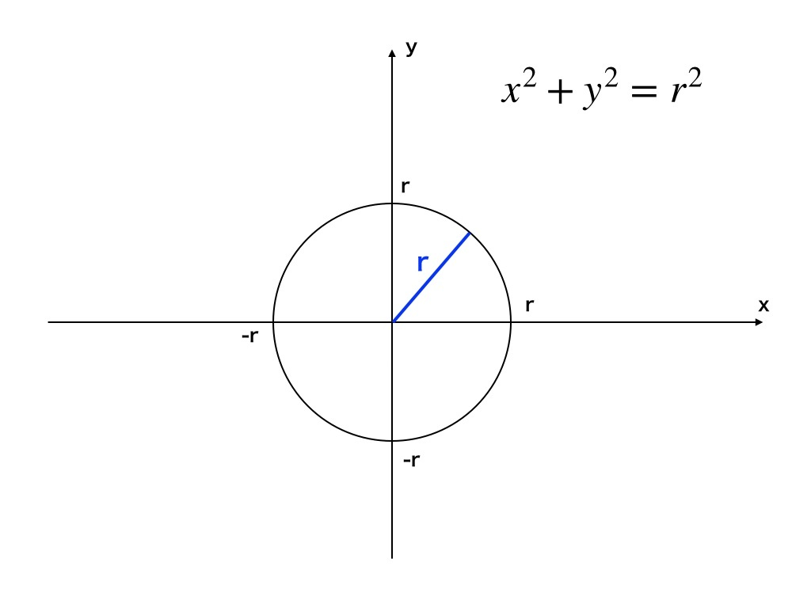

0.ゲーム数学入門（α版） / 5. 方程式（Zenn から 2026-10-30 に保存。本文の最終更新 2025-10-28T11:46:12.612+09:00）
方程式
概要
方程式とは\textcolor{red}{『何らかの数値の変化を表したもの』}です。
数学のみで学ぶと何のために必要なのか分かりにくいですが、ゲームにおいては物体の運動を表すために使用します。
ここではさまざまな方程式の中から、必須のものだけ紹介します。
直線の方程式

y=mxというような形で表記し、図示としては上記のようになる。
一般化すると、以下になる。

直線の方程式は、一定の速度で動く運動(等速運動)などで使用する。
y= 5x+3: x=2なら、y=13 ,x=3なら、y=18\\
y= -2x+1: x=2なら、y=-3 ,x=3なら、y=-5\\
y= 7x-5: x=2なら、y=9 ,x=3なら、y=16\\
放物線の方程式

y=x^2, y=-x^2というような形で表記し、図示としては上記のようになる。
一般化すると、以下になる。
y=\pm(x-a)^2+b (a:xの初期値, b:yの初期値)

放物線の方程式はその名の通り放物運動で使用する。放物運動とは物を投げた時の運動である。
y= (x-2)^2+3: x=2なら、y=3 ,x=1なら、y=4\\
y= -(x+2)^2+4: x=2なら、y=-12 ,x=1なら、y=-5\\
y= -(x+2)^2-4: x=2なら、y=-20 ,x=3なら、y=-29\\
円の方程式

x^2+y^2=r^2というような形で表記し、図示としては上記のようになる(rは半径)。
一般化すると、以下になる。
中心(a,b), 半径r\\
(x-a)^2+(y-b)^2 = r^2

円の方程式は円運動でも使用するが、円を用いた当たり判定などでも活用する。
中心(1,2),半径2の円：(x-1)^2+(y-2)^2=2^2\\
中心(-1,2),半径4の円：(x+1)^2+(y-2)^2=4^2\\
中心(-3,-6),半径3の円：(x+1)^2+(y+6)^2=3^2\\